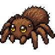

 Psychic
PsychicTap a stage to read its story.
Spiderling is a small fuzzy warm-brown spider with eight spindly legs and large round amber eyes that glow with gentle curiosity. Its round abdomen is densely covered in soft earthy hair. In Bug Thicket's leaf-litter it scurries between plant roots, reading vibrations through all eight legs simultaneously. It is the only creature in the thicket that doesn't hide from approaching children - instead it moves deliberately closer, drawn by the psychic warmth of an interested mind.
Field note: Spiderling reads the emotional state of anyone nearby through ground vibration - it sprints toward happiness and freezes still near fear.
Bug Thicket. Spiderling and its family are found in the Bug Thicket. See everyone who lives there.
Share a Bond Food that matches its types to become friends. Spiderling loves:
A Bond Food is not a trick. It joins your spirit with the Kimuro's spirit, and only when it chooses you.
Print the Kimuro adventure packs: mazes, cards, a board game and Bond Mark medals.
See the printable packs